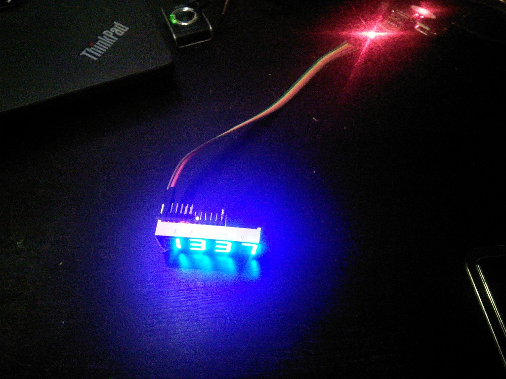

Displays¶
Published on 2015-08-24 in Talk Ranking Machine.
The seven-segment displays arrived today, so I should have all the required parts finally. I decided to start by getting the display to display something. Since the display has the same pin pitch as the Pro Mini, and for blue LEDs the voltage is just right, I soldered the display directly to the board, just like in Frowney . Since I don’t need the “:” sign in the middle, I left out the last 2 pins, so that only 12 pins of Pro Mini are used and I still have 6 pins for the buttons and their LEDs. A quick Arduino program to display a number:
const int GND_PINS[] = {9, 11, 12, A1};
const int VCC_PINS[] = {A0, 10, 7, 5, 4, 13, 8, 6};
const unsigned char DIGITS[] = {
0b01111111,
0b00000110,
0b01011011,
0b01001111,
0b01100110,
0b01101101,
0b01111101,
0b00000111,
0b01111111,
0b01101111,
};
void show7seg(int number) {
unsigned char digit;
for (int d = 0; d < 4; ++d) {
digit = DIGITS[number % 10];
number /= 10;
for (int s = 0; s < 8; ++s) {
digitalWrite(VCC_PINS[s], digit & (1 << s));
}
pinMode(GND_PINS[d], OUTPUT);
digitalWrite(GND_PINS[d], LOW);
delay(2);
pinMode(GND_PINS[d], INPUT);
}
}
void setup() {
for (int s = 0; s < 8; ++s) {
pinMode(VCC_PINS[s], OUTPUT);
}
}
void loop() {
show7seg(1337);
}
And voila, it’s working!

Now I just need to rework it so that it doesn’t use delay(), and add the button handling.